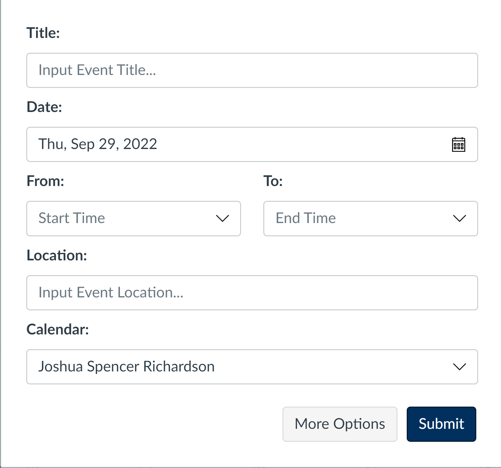
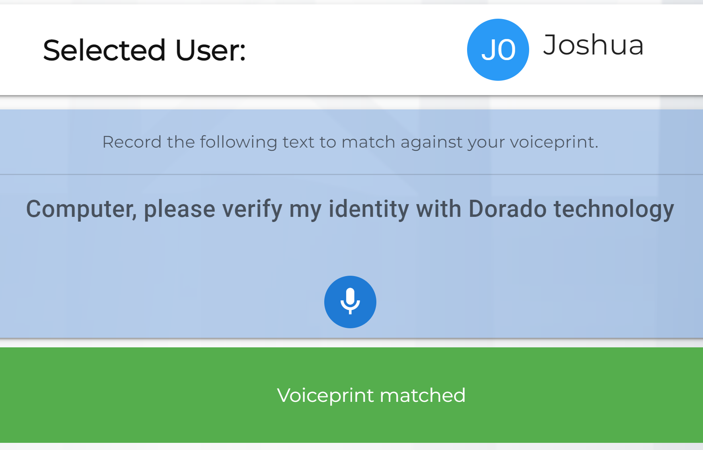
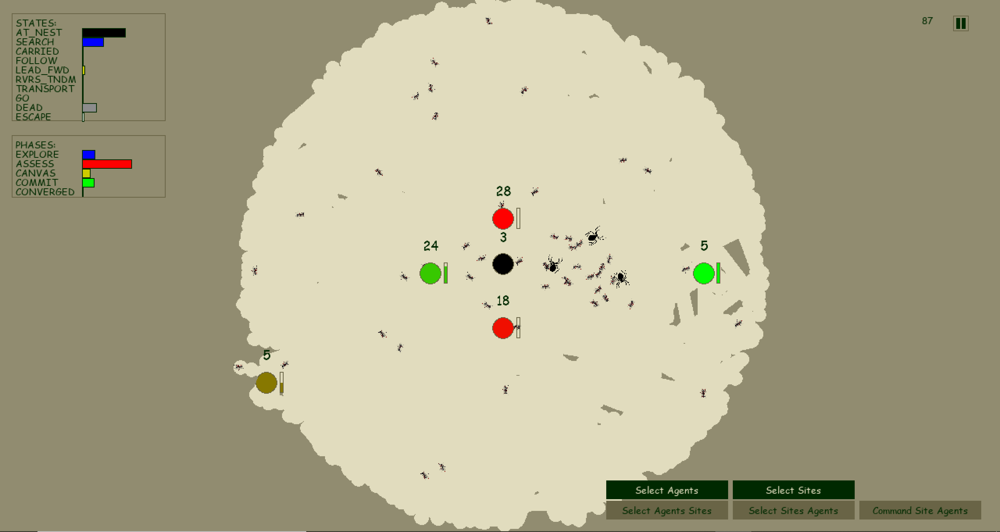

About
Computer Science major at Brigham Young University with an emphasis in Software Engineering and a minor in Japanese
Education
Brigham Young University
September 2019 - December 2022
Computer Science: Software Engineering Major
Japanese Minor
3.99 GPA
Work Experience
Full Stack Software Engineer Intern - Instructure, Salt Lake City, UT (Remote) June 2022 - August 2022
- Developed software for learning structures on Canvas LMS such as the calendar, syllabus, and course modules, using React, TypeScript, and Ruby on Rails and following the Agile Scrum process.
- Enabled administrators to choose days to skip in the due date calculations in Course Pacing.
- Refactored the old calendar event form to use React instead of jQuery and handlebars.
CS Research Assistant - BYU CS Department, Provo, UT April 2021 - Present
- Research about interactions between users and swarm-based robots.
- Using Python, implement a simulation representing how ants find new homes.
- Resulted in a user-friendly, interactive simulation ready to test many parameters relating to how users interact with the ant colony to help them accomplish their goal.
Discrete Structures Teaching Assistant - BYU CS Department, Provo, UT January 2021 - May 2021
- Answered questions about propositional logic, sets, relations, and graphs for 15 hours a week.
- Met with many students throughout each working period.
- Students were enlightened and encouraged through our meetings.
Projects
Dorado
link to website link to website with secure storage server Voice verification and identification technology that I assisted in making with a capstone team from BYU based on Cobalt's proof of concept model.
Anthill Search
source code A simulation of how ants find a new home when their old one has broken. Includes user controls so that users can help the ants.
Storage Recipe
link to website source code
Website used to help manage food storage.
Contact
Email: joshuasrichardson1@gmail.com
Github: https://github.com/joshuasrichardson
Linkedin: https://www.linkedin.com/in/joshua-richardson-19634b204/